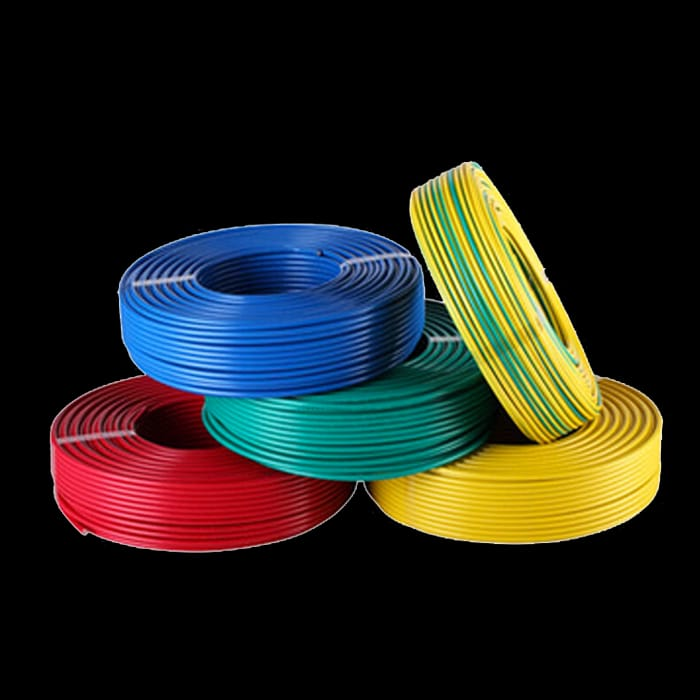
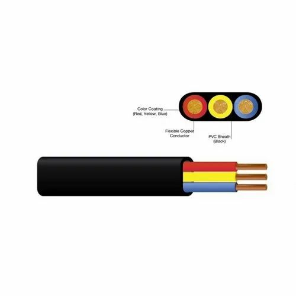

RK Cables Industries Ltd
RK Cables Industries Ltd
Our Product Range

Domestic Cables
Safe and efficient wiring for homes and apartments.

Power Cables
High-capacity cables for industrial power transmission.

Control Cables
Reliable cables for automation and control systems.

Overhead Related Cables
Durable cables for overhead power distribution.

Submersible Cables
Waterproof cables for pumps and underwater equipment.

Communication Cables
For high-speed data and voice transmission.

DC Cables
Efficient cables for direct current applications.

Special Customized Cables
Tailored cables for unique and specialized needs.